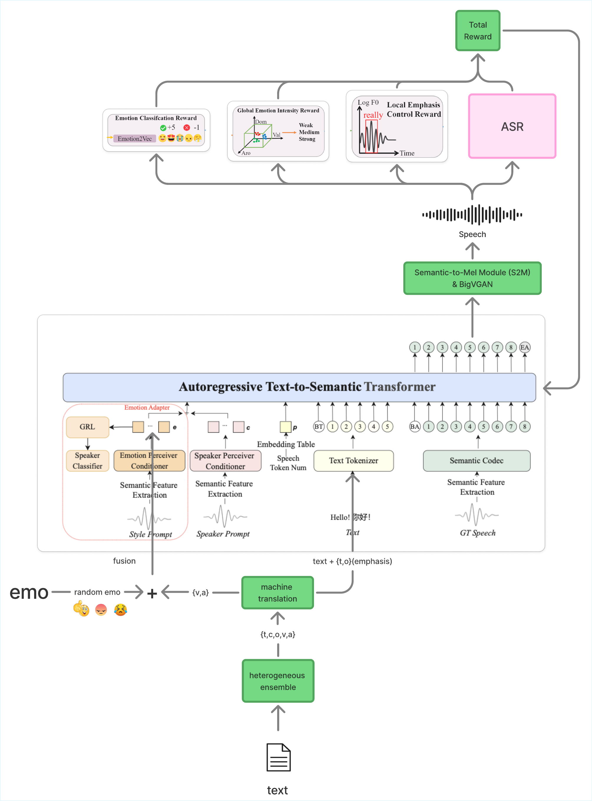

Final Report · Taiwanese Emotional TTS · IndexTTS2 + GRPO
Low-Resource Emotional TTS via RL
Audio Demo
Synthesis Comparison
Baseline = IndexTTS2-FT | Proposed = IndexTTS2-FT + RL + VA-stress control
| Ground Truth | Emotion | Baseline | Proposed |
|---|---|---|---|
| Angry | |||
| Angry | |||
| Disgusted | |||
| Disgusted | |||
| Fearful | |||
| Happy | |||
| Happy | |||
| Sad | |||
| Surprised | |||
| Surprised |
Abstract
We address emotional capability loss when expressive TTS models trained on high-resource languages are adapted to Taiwanese. The model may remain intelligible after fine-tuning, but emotional controllability, rhythm, emphasis, and prosodic richness can degrade under limited target-language data.
The final framework builds on IndexTTS2 and adds a VA-and-stress control mechanism: valence-arousal signals are derived from Aspect Sentiment Quad Prediction, while lexical emphasis markers guide local prosody. We combine this control path with a Taiwanese romanized phonemic front-end and GRPO-based emotional realignment to improve emotion intensity and prosodic control during low-resource transfer.
Experiment Snapshot
Method
Low-Resource Fine-Tuning
Adapt expressive IndexTTS2 to Taiwanese while trying to preserve the pretrained emotional prior.
ASQP Annotation
Use aspect-sentiment quadruples to derive valence-arousal control and sentiment-bearing emphasis spans.
Phonemic Front-End
Drive generation with Taiwanese romanization and numeric tones, bypassing Mandarin/English normalization.
VA-and-Stress Control
Scale the emotion vector with VA-conditioned adjustment and wrap local stress spans in emphasis markers.
GRPO Realignment
Optimize the autoregressive text-to-semantic policy with decoded-speech rewards and a KL anchor.
Reward Models
Score speech with emotion recognition, global intensity, local emphasis, and ASR content rewards.
Composite Reward
$$R = \lambda_1 R_{\mathrm{emo}} + \lambda_2 R_{\mathrm{int}} + \lambda_3 R_{\mathrm{emp}} + \lambda_4 R_{\mathrm{ASR}}$$
Reward weights balance categorical emotion, VAD-space intensity, pitch/energy emphasis, and transcription faithfulness.
GRPO with KL Anchor
$$\max_{\pi}\;\mathbb{E}\!\left[R\log\pi(a\mid s)\right] - \beta\,\mathrm{KL}\!\left(\pi\,\big\|\,p_{\mathrm{adapt}}\right)$$
The KL penalty keeps the policy near the adapted reference model while allowing localized expressive improvements.
System Architecture
The final architecture separates annotation, text preparation, synthesis, reward computation, and policy update. Taiwanese test sentences are back-translated only for ASQP annotation when Chinese-language aspect-sentiment labels are unavailable, while the synthesis path itself uses the romanized Taiwanese front-end.

Final Results
The final evaluation compares CosyVoice2, CosyVoice3, and four IndexTTS2 variants. The IndexTTS2 ablation crosses training stage, fine-tuned versus RL-realigned, with generation-time control, none versus VA-and-stress. The full system is IndexTTS2-proposed.
IndexTTS2-proposed achieves the strongest emotion recognition, especially improving happy and surprise.
The full system raises WER versus plain fine-tuning, but the increase is bounded under the shared IndexTTS2 scoring setup.
Stronger emotional rendering improves SER while lowering speaker similarity, making timbre retention the next bottleneck.
| Model | SER mean ↑ | WER mean ↓ | SS mean ↑ | Interpretation |
|---|---|---|---|---|
| CosyVoice2 | 0.14 | 1.6663 | 0.5812 | Strong timbre baseline, weak non-neutral emotion recognition. |
| CosyVoice3 | 0.13 | 2.1102 | 0.5725 | Similar timbre strength with limited emotional controllability. |
| IndexTTS2-FT | 0.27 | 0.7050 | 0.4561 | Best IndexTTS2 intelligibility, but less expressive than the full system. |
| IndexTTS2-FT+va-emphasis | 0.27 | 0.7408 | 0.4633 | Control has limited effect before RL realignment. |
| IndexTTS2-FT+RL | 0.28 | 0.8162 | 0.4333 | RL boosts surprise and anger while increasing WER and lowering timbre similarity. |
| IndexTTS2-proposed | 0.30 | 0.8404 | 0.4155 | Full RL plus VA-and-stress system gives the best emotion recognition. |
Note: WER values for CosyVoice use a different ASR pipeline and stricter tone-sensitive normalization, so they are diagnostic proxies rather than direct cross-model rankings against the IndexTTS2 rows.
Preliminary MOS Baseline
The project began with a CosyVoice2 Taiwanese TTS listening test. Twelve SARC laboratory members rated 20 intelligibility and naturalness sentences plus 10 speaker-similarity sentences, yielding 600 subjective ratings.
Conclusion
Control works best after RL.
VA-and-stress control barely changes the fine-tuned checkpoint, but after RL it raises SER from 0.28 to 0.30.
Emotion costs some clarity.
WER rises from 0.7050 to 0.8404 along the full pipeline, with RL contributing the largest single increase.
Timbre is the next challenge.
The proposed system improves emotion recognition over CosyVoice baselines, but speaker similarity remains lower.
Team Contributions
Hao-Chun Hsieh
Leads project direction, problem formulation, methodology design, base code development, and proposal drafting.
Pao-Hua Hsu
Generates the required audio files, refines the proposal, and supports architecture diagrams and poster design.
Nien-Tse Wu
Extends the implementation, refines the proposal, and leads empirical evaluation, dataset curation, and tuning.
Poster
Appendix
Supplementary experiment data tables
BibTeX
@misc{hsieh2026low_resource_emotional_tts_rl,
title={Low-Resource Emotional TTS via RL},
author={Hsieh, Hao-Chun and Hsu, Pao-Hua and Wu, Nien-Tse},
year={2026},
howpublished={Reinforcement Learning Final Project final report},
url={https://quaaaaa.github.io/RL_Final_Project/}
}